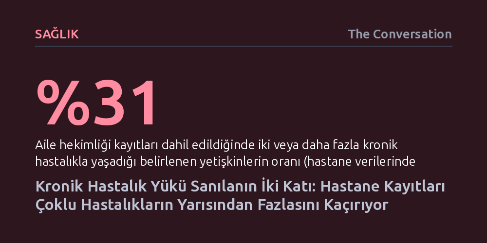

SAGLIK · The Conversation · 2026-10-26
Yeni Zelanda'da 374 bin yetişkinin verileri, yalnızca hastane kayıtlarına dayanmanın birden fazla kronik hastalıkla yaşayanların yarısından fazlasını gizlediğini ortaya koydu. Aile hekimliği verileri eklendiğinde çoklu hastalık oranı yüzde 14'ten yüzde 31'e fırlıyor.
Sağlık bütçeleri ve personel planlaması yalnızca hastane verilerine dayandığında, toplumdaki gerçek hastalık yükü ve birinci basamağın üstlendiği devasa bakım ihtiyacı görünmez kalır.

Yeni Zelanda'da sağlık bütçesinin yüzde 80'inden fazlası, uzun vadeli ve kronik rahatsızlıkların tedavisine harcanıyor. Ancak hastane koridorlarında ve kliniklerde çalışan hekimler için bu durum şaşırtıcı değil; zira diyabet, kalp-damar hastalıkları ve astım gibi yaygın sorunlar artık nadiren tek başına görülüyor. Günümüzde toplumun önemli bir kesimi aynı anda iki ya da daha fazla uzun vadeli sağlık sorunuyla, yani tıptaki adıyla çoklu kronik hastalık (multimorbidite) yüküyle yaşamak zorunda kalıyor.
Bu durumun hastalara kesintisiz ve kapsamlı bir bakım gerektirdiği iyi bilinse de asıl görünmeyen tehlike sağlık politikalarının temelini oluşturan resmi kayıtlarda yatıyor. Hükümetlerin sağlık planlaması ve bütçe tahsisinde en çok güvendiği kaynak olan hastane yatış kayıtları, toplum içinde ve birinci basamakta yönetilen kronik hastalık yükünü yansıtmaktan oldukça uzak kalıyor.
Auckland bölgesinde 374.071 yetişkine hizmet veren ProCare bünyesindeki aile hekimliği kayıtları ile ulusal hastane yatış veri tabanı ilk kez bu kapsamda eşleştirildi. Araştırmacılar; kanserden diyabete, solunum yolu rahatsızlıklarından kardiyovasküler hastalıklara kadar uzanan 61 farklı kronik durumun izini sürdü.
Sonuçlar, sağlık sisteminin içine düştüğü yanılsamayı somut şekilde ortaya koydu: Yalnızca hastane kayıtları baz alındığında yetişkin nüfusun yüzde 14'ünün iki veya daha fazla kronik hastalığı olduğu görülüyordu. Oysa hastaların aile hekimliği kayıtları da analize dahil edildiğinde bu oran birdenbire yüzde 31'e yükseldi. Bu hesaplama, tam 62.453 kişinin çoklu kronik hastalık yükünün hastane kayıtlarında tamamen kayıp olduğunu ve ancak aile hekimleri sayesinde tespit edilebildiğini gösterdi.
Araştırma ayrıca hastane verilerinin kadınlardaki kronik hastalık yükünü erkeklere kıyasla çok daha yüksek oranda eksik kaydettiğini ortaya çıkardı. En belirgin fark 55-84 yaş aralığında görülürken, yaş ilerledikçe tablo daha da ağırlaşıyor: 65-74 yaş grubundakilerin yüzde 60'ından fazlası, 75-84 yaş grubundakilerin ise neredeyse yüzde 80'i en az iki kronik hastalıkla aynı anda yaşıyor.
Bu devasa veri açığının arkasında sağlık sisteminin doğal işleyişi bulunuyor. Kronik hastalıkların büyük bölümü, hastaların acil servise ya da yataklı tedaviye ihtiyaç duymasına gerek kalmadan, doğrudan mahallelerdeki aile hekimleri ve toplum sağlığı çalışanları tarafından kontrol altında tutuluyor. Aile hekimliği kayıtlarında en sık rastlanan tanılar yüksek tansiyon, eklem ve omurga rahatsızlıkları, diyabet ve kronik astım gibi durumlardan oluşuyor.
Dahası, bir hasta bambaşka bir akut şikayetle hastaneye yattığında bile, yatış gerekçesiyle doğrudan ilgili olmayan kronik rahatsızlıkları çoğu zaman resmi epikrizlere veya istatistiklere işlenmiyor. Oysa aynı anda birden fazla hastalığı yönetmek; olası ilaç etkileşimlerini, yan etkileri ve karmaşık tedavi planlarını sürekli gözetmeyi gerektiriyor. Aile hekimliği kliniklerinin mesaisinin büyük kısmını oluşturan bu yoğun emek, hastane odaklı istatistiklerde adeta yok sayılıyor.
Yeni Zelanda'da birinci basamak ile hastaneler arasında entegre, ortak bir ulusal hasta kayıt sistemi bulunmuyor. Bu durum, hastaneye başvuran bir hastanın aile hekimindeki kritik geçmişine klinisyenlerin doğrudan erişememesine yol açıyor. Eksik tıbbi öykü ise kaçınılmaz olarak hatalı ilaç kombinasyonlarına, beklenmedik komplikasyonlara, hastanede kalış süresinin uzamasına ve önlenebilir tekrar yatışlara zemin hazırlıyor.
Sağlık planlaması açısından bakıldığında, yalnızca hastane yatışlarına dayalı bütçeleme yapmak toplumun gerçek bakım talebini ve bunu karşılayacak iş gücünü vahim şekilde hafife almak anlamına geliyor. Üstelik nüfus hızla yaşlanıp bakım ihtiyacı karmaşıklaşırken, sistemi sırtlayan aile hekimliği tükenmenin eşiğinde. Yapılan bir meslek örgütü araştırması, aile hekimlerinin yüzde 37'sinin 2027'ye, yüzde 55'inin ise 2032'ye kadar emekli olmayı planladığını gösteriyor. Gerçek tablo görülmez ve kaynaklar birinci basamağa aktarılmazsa, sağlık sisteminin temeli geri dönülemez bir darboğaza sürüklenecek.